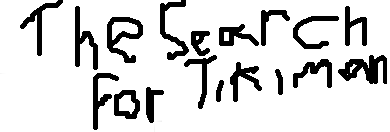

SUPER FREAKS 
THE ONE THAT STARTED THE FRANCHISE!
Return to the games page
Stickofsky Quigley Funnybone,(usually refered to as Sticky; Stickofsky is his full name.) has built a syphon that can steal robots from the distant war-torn planet of Robot World.
In Robot World, everyone fights, or trains for wars. Sticky is letting the robot monsters rampage around the continent of Stickland.
A certian Stick figure there has annoyed Sticky and ruined his plans, too. To prevent said Stickdude from foiling his plan, he has captured his friend Tikiman, and locked him up in his heavily guarded castle.
Gambi, the blue ghost of Spider Maze fame, trooped off with Stickdude to save Tikiman and stop Robot World.
ALSO HAS A REMASTERED VERSION!